Chapter 2 Heatmap Annotations
Heatmap annotations are important components of a heatmap that it shows additional information that associates with rows or columns in the heatmap. ComplexHeatmap package provides very flexible supports for setting annotations or defining new annotation graphics. The annotations can be put on the four sides of the heatmap, by top_annotation, bottom_annotation, left_annotation and right_annotation arguments.
The value for the four arguments should be in the HeatmapAnnotation class and should be constructed by HeatmapAnnotation(), or by rowAnnotation() if it is row annotation. (rowAnnotation() is just a helper function which is identical to HeatmapAnnotation(..., which = "row")) A simple usage of annotations is as follows.
set.seed(123)
mat = matrix(rnorm(100), 10)
column_ha = HeatmapAnnotation(foo1 = runif(10), bar1 = anno_barplot(runif(10)))
row_ha = rowAnnotation(foo2 = runif(10), bar2 = anno_barplot(runif(10)))
Heatmap(mat, name = "mat", top_annotation = column_ha, right_annotation = row_ha)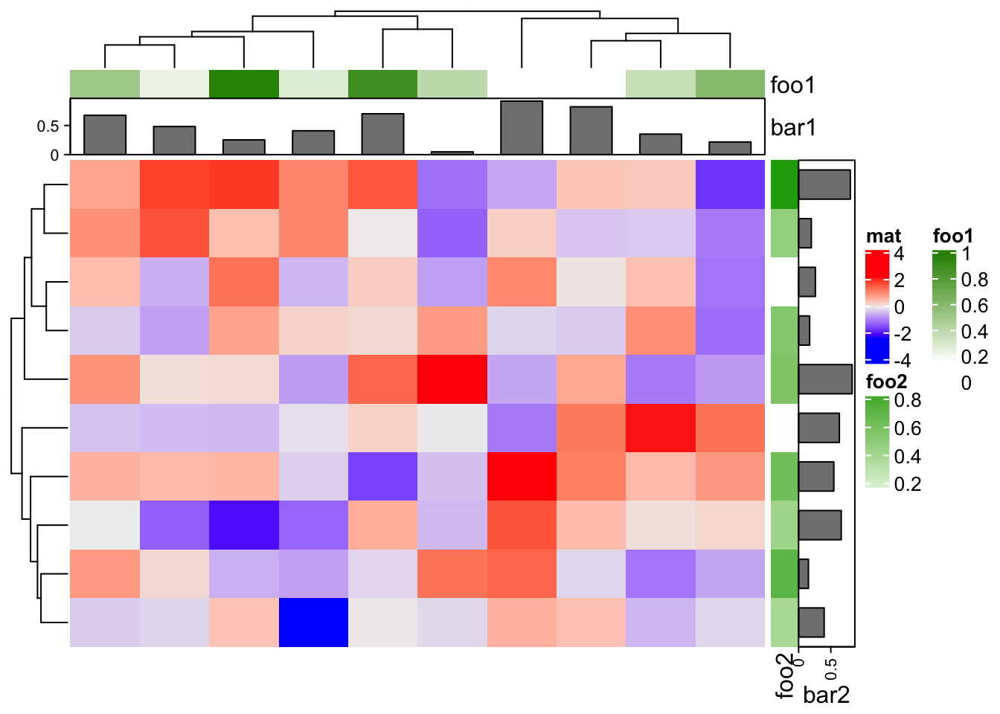
Or assign as bottom annotation and left annotation.
Heatmap(mat, name = "mat", bottom_annotation = column_ha, left_annotation = row_ha)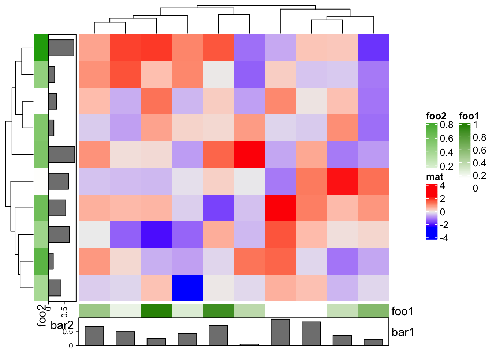
In above examples, for column_ha and row_ha, both have two annotations where foo1 and foo2 are numeric vectors and bar1 and bar2 are barplots. The vector-like annotation is called “simple annotation” here and the barplot annotation is called “complex annotation”. You can already see the annotations must be defined as name-value pairs (e.g. foo = ...).
Heatmap annotations can also be independent of the heatmaps. They can be concatenated to the heatmap list by + if it is horizontal or %v% if it is vertical. Next chapter will discuss how to concatenate heatmaps/annotations.
# code only for demonstration
Heatmap(...) + rowAnnotation() + ...
Heatmap(...) %v% HeatmapAnnotation(...) + ...HeatmapAnnotation() returns a HeatmapAnnotation class object. The object is usually composed of several annotations. If following sections of this chapter, we first introduce settings for individal annotation, and later we show how to put them toghether.
You can see the information of the column_ha and row_ha objects:
column_ha## A HeatmapAnnotation object with 2 annotations
## name: heatmap_annotation_0
## position: column
## items: 10
## width: 1npc
## height: 15mm
## this object is subsetable
## 5.92327473958333mm extension on the left
## 9.47286783854167mm extension on the right
##
## name annotation_type color_mapping height
## foo1 continuous vector random 5mm
## bar1 anno_barplot() 10mmrow_ha## A HeatmapAnnotation object with 2 annotations
## name: heatmap_annotation_1
## position: row
## items: 10
## width: 15mm
## height: 1npc
## this object is subsetable
## 9.95358072916666mm extension on the bottom
##
## name annotation_type color_mapping width
## foo2 continuous vector random 5mm
## bar2 anno_barplot() 10mmIn following examples in this chapter, we will only show the grapgics for the annotations with no heatmap, unless it is necessary. If you want to try it with a heatmap, you just assign the HeatmapAnnotation object which we always name as ha to top_annotation, bottom_annotation, left_annotation or right_annotation arguments.
Settings are basically the same for column annotations and row annotations. If there is nothing specicial, we only show the column annotation as examples. If you want to try row annotation, just add which = "row" to HeatmapAnnotation() or directly change to rowAnnotation() function.
2.1 Simple annotation
A so-called “simple annotation” is the most used style of annotations which is heatmap-like or grid-like graphics where colors are used to map to the anntation values. To generate a simple annotation, you just simply put the annotation vector in HeatmapAnnotation() with a specific name.
ha = HeatmapAnnotation(foo = 1:10)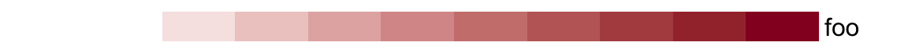
Or a discrete annotation:
ha = HeatmapAnnotation(bar = sample(letters[1:3], 10, replace = TRUE))If colors are not specified, colors are randomly generated. To set the colors for annotation, col needs to be set as a named list. For continuous values, the color mapping should be a color mapping function generated by circlize::colorRamp2().
library(circlize)
col_fun = colorRamp2(c(0, 5, 10), c("blue", "white", "red"))
ha = HeatmapAnnotation(foo = 1:10, col = list(foo = col_fun))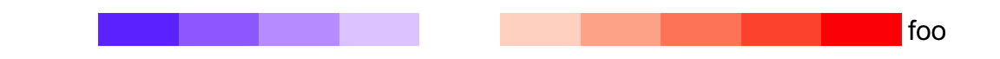
And for discrete annotations, the color should be a named vector where names correspond to the levels in the annotation.
ha = HeatmapAnnotation(bar = sample(letters[1:3], 10, replace = TRUE),
col = list(bar = c("a" = "red", "b" = "green", "c" = "blue")))If you specify more than one vectors, there will be multiple annotations (foo and bar in following example). Also you can see how col is set when foo and bar are all put into a single HeatmapAnnotation(). Maybe you can understand now the names in the color list is actually used to map to the annotation names.
ha = HeatmapAnnotation(
foo = 1:10,
bar = sample(letters[1:3], 10, replace = TRUE),
col = list(foo = col_fun,
bar = c("a" = "red", "b" = "green", "c" = "blue")
)
)The color for NA value is controlled by na_col argument.
ha = HeatmapAnnotation(
foo = c(1:4, NA, 6:10),
bar = c(NA, sample(letters[1:3], 9, replace = TRUE)),
col = list(foo = col_fun,
bar = c("a" = "red", "b" = "green", "c" = "blue")
),
na_col = "black"
)gp mainly controls the graphic parameters for the borders of the grids.
ha = HeatmapAnnotation(
foo = 1:10,
bar = sample(letters[1:3], 10, replace = TRUE),
col = list(foo = col_fun,
bar = c("a" = "red", "b" = "green", "c" = "blue")
),
gp = gpar(col = "black")
)The simple annotation can also be a matrix (numeric or character) that all the columns in the matrix share a same color mapping schema. Note columns in the matrix correspond to the rows in the column annotation. Also the column names of the matrix are used as the annotation names.
ha = HeatmapAnnotation(foo = cbind(a = runif(10), b = runif(10)))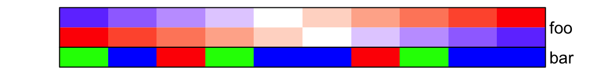
If the matrix has no column name, the name of the annotation is still used, but drawn in the middle of the annotation.
ha = HeatmapAnnotation(foo = cbind(runif(10), runif(10)))As simple annotations can be in different modes (e.g. numeric, or character), they can be combined as a data frame and send to df argument. Imaging in your project, you might already have an annotation table, you can directly set it by df.
anno_df = data.frame(foo = 1:10,
bar = sample(letters[1:3], 10, replace = TRUE))
ha = HeatmapAnnotation(df = anno_df,
col = list(foo = col_fun,
bar = c("a" = "red", "b" = "green", "c" = "blue")
)
)Single annotations and data frame can be mixed. In following example, colors for foo2 is not specified, random colors will be used.
ha = HeatmapAnnotation(df = anno_df,
foo2 = rnorm(10),
col = list(foo = col_fun,
bar = c("a" = "red", "b" = "green", "c" = "blue")
)
)The height of the simple annotation is controlled by anno_simple_size argument. Since all single annotations have same height, the value of anno_simple_size is a single unit value. Note there are arguments like width, height, annotation_width and annotation_height, but they are used to adjust the width/height when there are multiple annotations (which are always mix of simple annotations and complex annotations).
ha = HeatmapAnnotation(
foo = cbind(a = 1:10, b = 10:1),
bar = sample(letters[1:3], 10, replace = TRUE),
col = list(foo = col_fun,
bar = c("a" = "red", "b" = "green", "c" = "blue")
),
anno_simple_size = unit(1, "cm")
)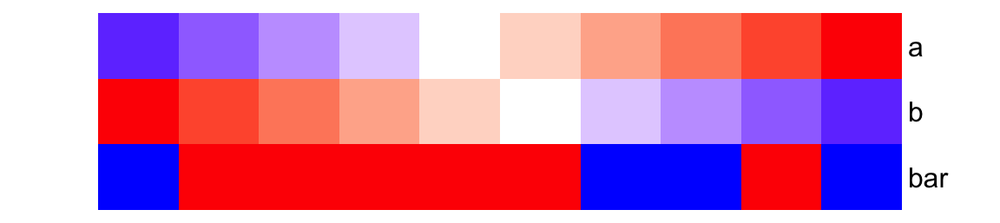
2.2 Simple annotation as an annotation function
HeatmapAnnotation() supports “complex annotation” by setting the annotation as a function. The annotation function defines how to draw the graphics at a certain position corresponding to the column or row in the heatmap. There are quite a lot of annotation functions predefined in ComplexHeatmap package. In the end of this chapter, we will introduce how to construct your own annotation function by the AnnotationFunction class.
For all the annotation functions in forms of anno_*(), if it is specified in HeatmapAnnotation() or rowAnnotation(), you don’t need to do anything explicitly on anno_*() to tell it should be drawn on rows or columns. anno_*() automatically detects whether it is a row annotation environment or a column annotation environment.
The simple annotation shown in previous section is internally constructed by anno_simple() annotation function. However, directly using anno_simple() will not automatically generate legends for the final plot. However, it can provide more flexibility for more annotation graphics (note later chapter we will show, although the annotation functions cannot automatically generate the legends, the legends can be controlled and added to the final plot manually).
For an example in previous section:
# code only for demonstration
ha = HeatmapAnnotation(foo = 1:10)is actually identical to:
# code only for demonstration
ha = HeatmapAnnotation(foo = anno_simple(1:10))anno_simple() makes heatmap-like annotations (or the simple annotations). Basically if users only make heatmap-like annotations, they do not need to directly use anno_simple(), but this function allows to add more symbols on the annotation grids.
anno_simple() allows to add “points” or single-letter symbols on top of the annotation grids. pch, pt_gp and pt_size control the settings of the points. The value of pch can be a vector with possible NA values.
ha = HeatmapAnnotation(foo = anno_simple(1:10, pch = 1,
pt_gp = gpar(col = "red"), pt_size = unit(seq(1, 10), "mm")))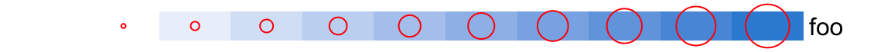
Set pch as a vector:
ha = HeatmapAnnotation(foo = anno_simple(1:10, pch = 1:10))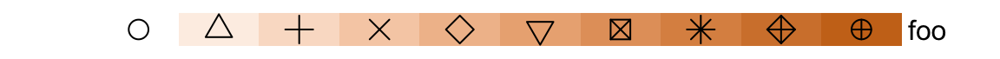
Set pch as a vector of letters:
ha = HeatmapAnnotation(foo = anno_simple(1:10,
pch = sample(letters[1:3], 10, replace = TRUE)))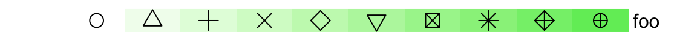
Set pch as a vector with NA values (nothing is drawn for NA pch values):
ha = HeatmapAnnotation(foo = anno_simple(1:10, pch = c(1:4, NA, 6:8, NA, 10, 11)))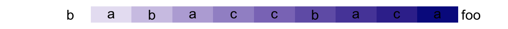
pch also works if the value for anno_simple() is a matrix; The length of pch should be as same as the number of matrix rows or columns or even the length of the matrix (the length of the matrix is the length of all data points in the matrix).
Lenght of pch corresponds to matrix columns:
ha = HeatmapAnnotation(foo = anno_simple(cbind(1:10, 10:1), pch = 1:2))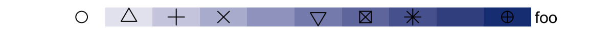
Lenght of pch corresponds to matrix rows:
ha = HeatmapAnnotation(foo = anno_simple(cbind(1:10, 10:1), pch = 1:10))pch is a matrix:
pch = matrix(1:20, nc = 2)
pch[sample(length(pch), 10)] = NA
ha = HeatmapAnnotation(foo = anno_simple(cbind(1:10, 10:1), pch = pch))Till now, you might wonder how to set the legends of the symbols you’ve added to the simple annotations. Now We will show you a simple example and this functionality will be d…. In this example, we assume the simple annotations are kind of p-values and we add * for p-values less than 0.01.
set.seed(123)
pvalue = 10^-runif(10, min = 0, max = 3)
is_sig = pvalue < 0.01
pch = rep("*", 10)
pch[!is_sig] = NA
pvalue_col_fun = colorRamp2(c(0, 2, 3), c("green", "white", "red")) # color mapping for -log10(pvalue)
ha = HeatmapAnnotation(pvalue = anno_simple(-log10(pvalue), col = pvalue_col_fun, pch = pch),
annotation_name_side = "left")
ht = Heatmap(matrix(rnorm(100), 10), name = "mat", top_annotation = ha)
# see how we define the legend for pvalue
lgd_pvalue = Legend(title = "p-value", col = pvalue_col_fun, at = c(0, 1, 2, 3),
labels = c("1", "0.1", "0.01", "0.001"))
lgd_sig = Legend(pch = "*", type = "points", labels = "< 0.01")
draw(ht, annotation_legend_list = list(lgd_pvalue, lgd_sig))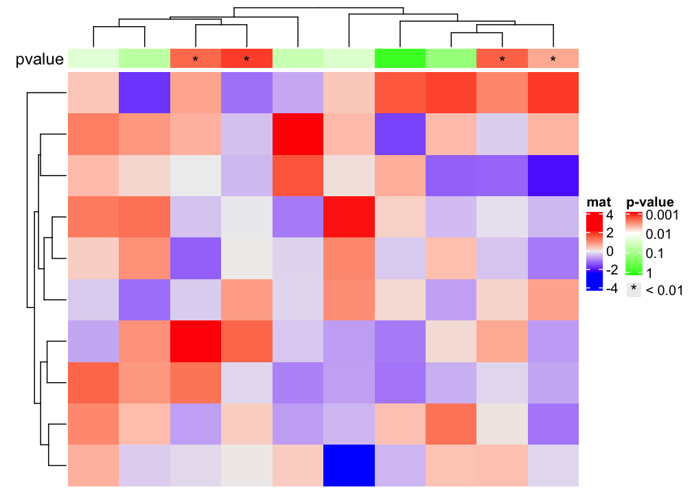
The height of the simple annotation can be controled by height argument or anno_simple_size (or width if it is a row annotation) inside anno_simple(). anno_simple_size controls the size for single-row annotation and height/width controls the total height/width of all simple annotations. If height/width is set, anno_simple_size is ignored.
ha = HeatmapAnnotation(foo = anno_simple(1:10, height = unit(2, "cm")))
ha = HeatmapAnnotation(foo = anno_simple(cbind(1:10, 10:1), anno_simple_size = unit(2, "cm")))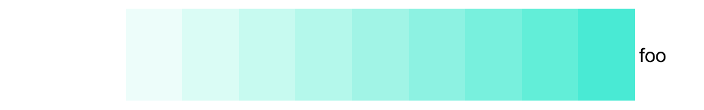
For all the annotation functions we introduce later, the height or the width for individual annotations should all be set inside the anno_*() functions:
# code for demonstration
anno_*(width = ...)
anno_*(height = ...)Again, the width, height, annotation_width and annotation_height arguments in HeatmapAnnotation() are used to adjust the size of multiple annotations.
2.3 Empty annotation
anno_empty() is a place holder where nothing is drawn. Later graphics can be added by decorate_annotation() function.
ha = HeatmapAnnotation(foo = anno_empty(border = TRUE))In Chapter, we will introduce the use of the decoration functions, but here we give a quick example. In gene expression expression analysis, there are senarios that we split the heatmaps into several groups and we want to highlight some key genes in each group. In this case, we simply add the labels on the right side of the heatmap without aligning them to the their corresponding rows. (anno_mark() can align the labels correclty to their corresponding rows, but in the senario we show here, it is not necessray).
In following example, basically what we do is in each empty annotation, we add a segment and text.
random_text = function(n) {
sapply(1:n, function(i) {
paste0(sample(letters, sample(4:10, 1)), collapse = "")
})
}
text_list = list(
text1 = random_text(4),
text2 = random_text(5),
text3 = random_text(6),
text4 = random_text(7)
)
ha = rowAnnotation(foo = anno_empty(border = FALSE,
width = max_text_width(unlist(text_list)) + unit(4, "mm")))
Heatmap(matrix(rnorm(1000), nrow = 100), name = "mat", row_km = 4, right_annotation = ha)
for(i in 1:4) {
decorate_annotation("foo", slice = i, {
grid.rect(x = 0, width = unit(2, "mm"), gp = gpar(fill = i, col = NA), just = "left")
grid.text(paste(text_list[[i]], collapse = "\n"), x = unit(4, "mm"), just = "left")
})
}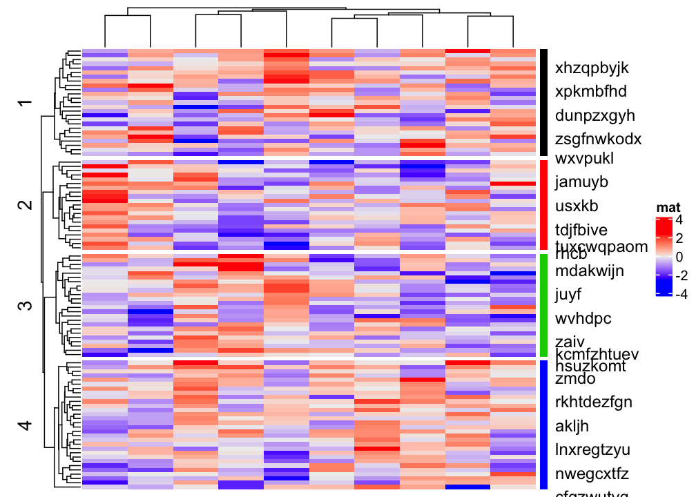
A second use of the empty annotation is to add complex annotation graphics where the empty annotation pretends to be a virtual plotting regions. You can construct an annotation function by AnnotationFunction class for complex annotation graphics, which allows subsetting and splitting, but still, it can be a secondary choice to directly draw inside the empty annotation, which is easier and faster for implementing rather graphics (but less flexible and does not allow splitting).
In following we show how to add a “complex version” of points annotation. The only thing that needs to be aware of is the location on x-axes (y-axes if it is a row annotation) should correspond to the column index after column reordering.
ha = HeatmapAnnotation(foo = anno_empty(border = TRUE,
height = unit(3, "cm")))
ht = Heatmap(matrix(rnorm(100), nrow = 10), name = "mat", top_annotation = ha)
ht = draw(ht)
co = column_order(ht)
value = runif(10)
decorate_annotation("foo", {
x = 1:10
value = value[co]
pushViewport(viewport(xscale = c(0.5, 10.5), yscale = c(0, 1)))
grid.lines(c(0.5, 10.5), c(0.5, 0.5), gp = gpar(lty = 2),
default.units = "native")
grid.points(x, value, pch = 16, size = unit(2, "mm"),
gp = gpar(col = ifelse(value > 0.5, "red", "blue")), default.units = "native")
grid.yaxis(at = c(0, 0.5, 1))
popViewport()
})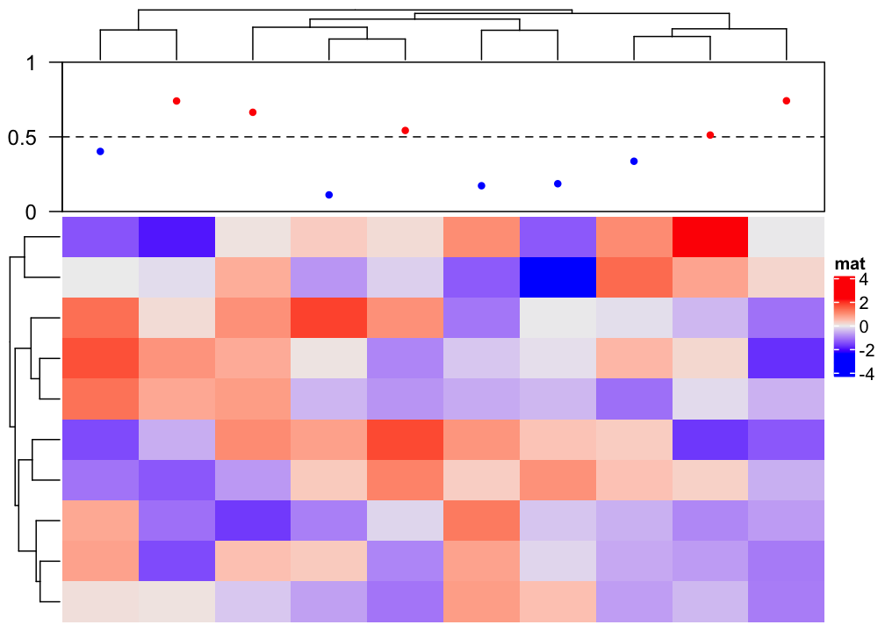
2.4 Image annotation
Images can be added as annotations. anno_image() supports image formats in png, svg, pdf, eps, jpeg/jpg, tiff. png, jpeg/jpg and tiff images are imported by png::readPNG(), jpeg::readJPEG() and tiff::readTIFF(), and drawn by grid::grid.raster(). svg images are firstly reformatted by rsvg::rsvg_svg() and then imported by grImport2::readPicture() and drawn by grImport2::grid.picture(). pdf and eps images are imported by grImport::PostScriptTrace() and grImport::readPicture(), later drawn by grImport::grid.picture().
The free icons for following examples are from https://github.com/Keyamoon/IcoMoon-Free. A vector of image pathes are set as the first argument of anno_image().
image_png = sample(dir("~/Downloads/IcoMoon-Free-master/PNG/64px", full.names = TRUE), 10)
image_svg = sample(dir("~/Downloads/IcoMoon-Free-master/SVG/", full.names = TRUE), 10)
image_eps = sample(dir("~/Downloads/IcoMoon-Free-master/EPS/", full.names = TRUE), 10)
image_pdf = sample(dir("~/Downloads/IcoMoon-Free-master/PDF/", full.names = TRUE), 10)
# we only draw the image annotation for PNG images, while the others are the same
ha = HeatmapAnnotation(foo = anno_image(image_png))## Loading required namespace: pngDifferent image formats can be mixed in the input vector.
# code is only for demonstration
ha = HeatmapAnnotation(foo = anno_image(c(image_png[1:3], image_svg[1:3],
image_eps[1:3], image_pdf[1:3])))Border and background colors can be set by gp.
ha = HeatmapAnnotation(foo = anno_image(image_png,
gp = gpar(fill = 1:10, col = "black")))border controls the border of the whole annotation.
# code only for deonstration
ha = HeatmapAnnotation(foo = anno_image(image_png, border = "red"))Padding or space around the images is set by space.
ha = HeatmapAnnotation(foo = anno_image(image_png, space = unit(3, "mm")))
If only some of the images need to be drawn, the other elements in the image vector can be set to '' or NA.
image_png[1:2] = ""
ha = HeatmapAnnotation(foo = anno_image(image_png))The default height for column image annotation is 1cm.
2.5 Points annotation
Points annotation shows distribution of a list of data points. The data points object x can be a single vector or a matrix. If it is a matrix, the graphic settings such as pch, size and gp can correpspond to matrix columns.
ha = HeatmapAnnotation(foo = anno_points(runif(10)))ha = HeatmapAnnotation(foo = anno_points(matrix(runif(20), nc = 2),
pch = 1:2, gp = gpar(col = 2:3)))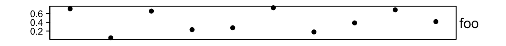
ylim controls the range on “y-axis” or the “data axis” (if it is a row annotation, the data axis is horizontal), extend controls the extended space on the data axis direction. axis controls whether to show the axis and axis_param controls the settings for axis. The default settings for axis are:
default_axis_param("column")## $at
## NULL
##
## $labels
## NULL
##
## $labels_rot
## [1] 0
##
## $gp
## $fontsize
## [1] 8
##
##
## $side
## [1] "left"
##
## $facing
## [1] "outside"And you can overwrite some of them:
ha = HeatmapAnnotation(foo = anno_points(runif(10),
axis_param = list(
side = "right",
at = c(0, 0.5, 1),
labels = c("zero", "half", "one")
))
)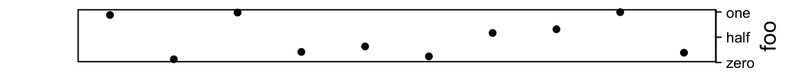
The configuration of axis is same for other annotation functions which have axes.
The default height of the column points annotation is 1cm.
2.6 Lines annotation
anno_lines() connects the data points by a list of segments. Similar as anno_points(), the data variable can be a numeric vector:
ha = HeatmapAnnotation(foo = anno_lines(runif(10)))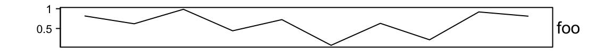
Or a matrix:
ha = HeatmapAnnotation(foo = anno_lines(cbind(c(1:5, 1:5), c(5:1, 5:1)), gp = gpar(col = 2:3),
add_points = TRUE, pt_gp = gpar(col = 5:6), pch = c(1, 16)))
Smoothed lines (by loess()) can be added instead of the original lines by setting smooth = TRUE, but it should be used with caution because the order of columns in the heatmap is used as “x-value” for the fitting and the order will change after the clustering of the heatmap.
Smoothing also works in the input data variable is a matrix that the smoothing is performed for each column separately.
ha = HeatmapAnnotation(foo = anno_lines(runif(10), smooth = TRUE, add_points = TRUE))
The default height for column lines annotation is 1cm.
2.7 Barplot annotation
The data points can be represented as barplots. Some of the arguments such as ylim, axis, axis_param are same as anno_points() that users can refer to the documentation of anno_barplot().
ha = HeatmapAnnotation(foo = anno_barplot(1:10))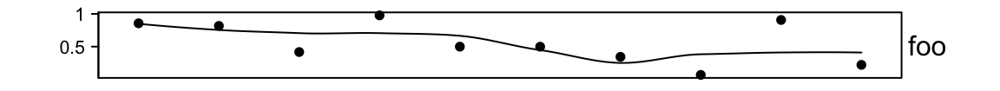
The width of bars is controlled by bar_width. It is a relative value to the width of the cell in the heatmap.
ha = HeatmapAnnotation(foo = anno_barplot(1:10, bar_width = 1))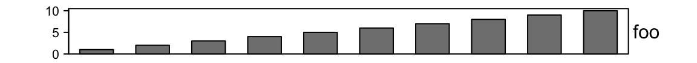
Graphic parameters are controlled by gp.
ha = HeatmapAnnotation(foo = anno_barplot(1:10, gp = gpar(fill = 1:10)))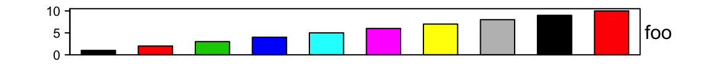
You choose the baseline of bars by baseline.
ha = HeatmapAnnotation(foo = anno_barplot(seq(-5, 5), baseline = "min"))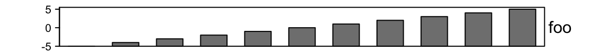
If the input value is a matrix, it will be represented as stacked barplots.
ha = HeatmapAnnotation(foo = anno_barplot(matrix(nc = 2, c(1:10, 10:1))))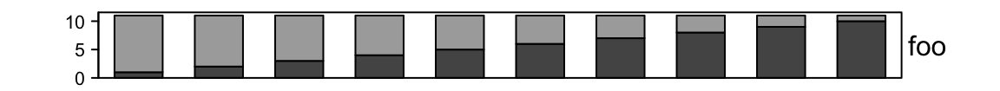
And length of parameters in gp can be the number of the columns in the matrix:
ha = HeatmapAnnotation(foo = anno_barplot(cbind(1:10, 10:1),
gp = gpar(fill = 2:3, col = 2:3)))
Following example shows a barplot annotation which visualizes a proportion matrix (for which row sums are 1).
m = matrix(runif(4*10), nc = 4)
m = t(apply(m, 1, function(x) x/sum(x)))
ha = HeatmapAnnotation(foo = anno_barplot(m, gp = gpar(fill = 2:5),
bar_width = 1, height = unit(6, "cm")))
The default height for column barplot annotation is 1cm.
2.8 Boxplot annotation
Boxplot annotation as well as the annotation functions which are introduced later are more suitable for small matrice. You don’t want to put boxplots as column annotation for a matrix with 100 columns.
For anno_boxplot(), the input data variable should be a matrix or a list. If x is a matrix and if it is a column annotation, statistics for boxplots are calculated by columns, and if it is a row annotation, the calculation is done by rows.
set.seed(12345)
m = matrix(rnorm(100), 10)
ha = HeatmapAnnotation(foo = anno_boxplot(m, height = unit(4, "cm")))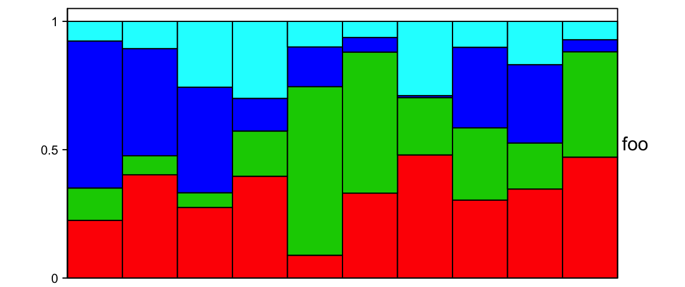
Graphic parameters are controlled by gp.
ha = HeatmapAnnotation(foo = anno_boxplot(m, height = unit(4, "cm"),
gp = gpar(fill = 1:10)))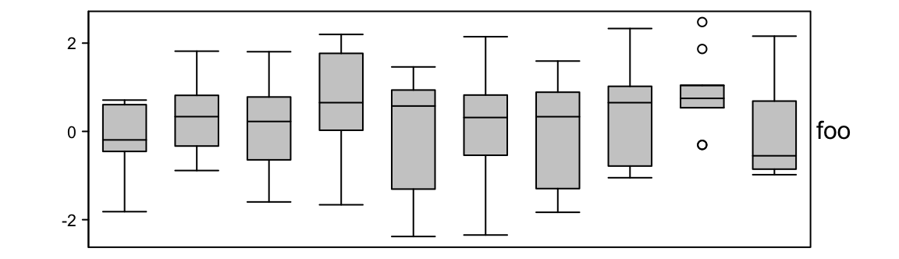
Width of the boxes are controlled by box_width. outline controls whether to show outlier points.
ha = HeatmapAnnotation(foo = anno_boxplot(m, height = unit(4, "cm"),
box_width = 0.9, outline = FALSE))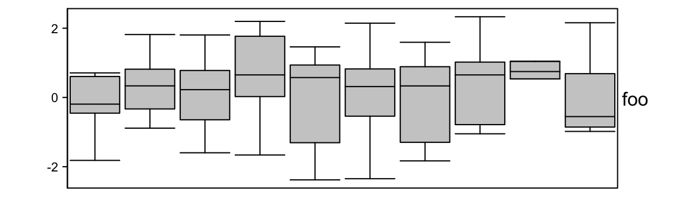
The default height of column boxplot annotation is 2cm.
2.9 histogram annotation
Annotations as histograms are more suitable to put as row annotations. The histogram annotation shows the distribution of each row by histograms. The setting for the data variable is the same as anno_boxplot() which can be a matrix or a list.
m = matrix(rnorm(1000), nc = 100)
ha = rowAnnotation(foo = anno_histogram(m)) # apply `m` on rows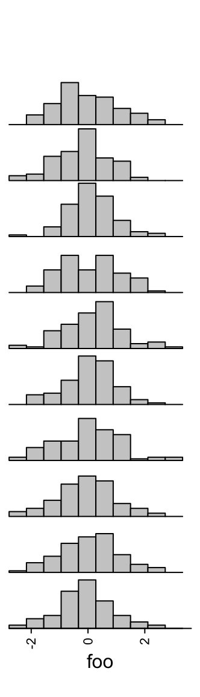
Number of breaks for histograms is controlled by n_breaks.
ha = rowAnnotation(foo = anno_histogram(m, n_breaks = 20))
Colors are controlled by gp.
ha = rowAnnotation(foo = anno_histogram(m, gp = gpar(fill = 1:10)))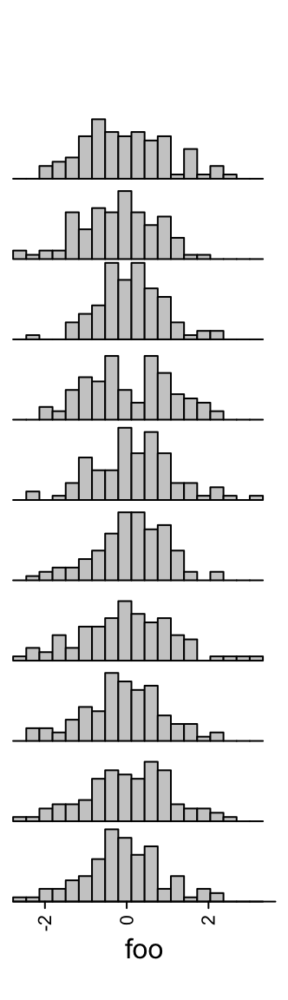
The default for column histogram annotation is 4cm.
2.10 Density annotation
Similar as histogram annotations, anno_density() shows the distribution as a fitted curve.
ha = rowAnnotation(foo = anno_density(m))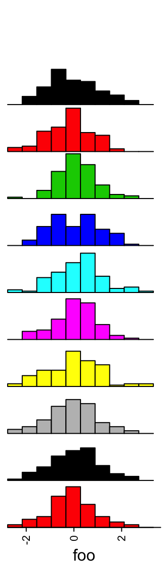
The height of the density lines can be controlled to make the distribution look like a “joyplot”.
ha = rowAnnotation(foo = anno_density(m, joyplot_scale = 2,
gp = gpar(fill = "#CCCCCC80")))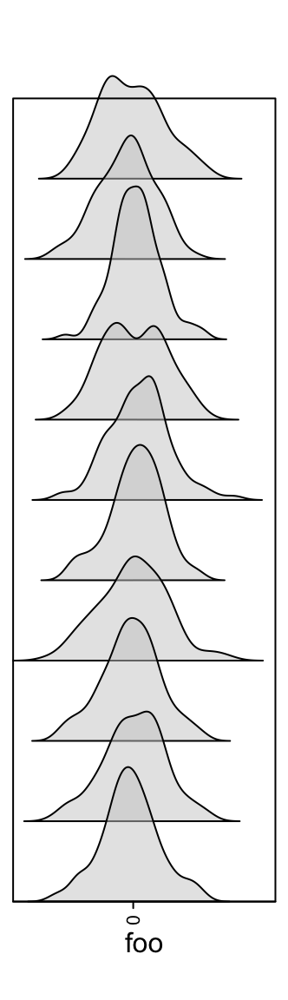
Or visualize the distribution as violin plot.
ha = rowAnnotation(foo = anno_density(m, type = "violin",
gp = gpar(fill = 1:10)))
When there are too many rows, the space for normal density peaks might be too small. In this case, we can visualize the distribution by heatmaps.
ha = rowAnnotation(foo = anno_density(m, type = "heatmap", width = unit(6, "cm")))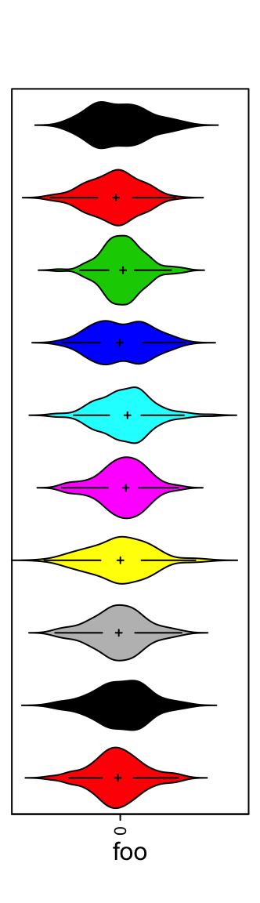
THe color schema for heatmap distribution is controlled by heatmap_colors.
ha = rowAnnotation(foo = anno_density(m, type = "heatmap", width = unit(6, "cm"),
heatmap_colors = c("white", "orange")))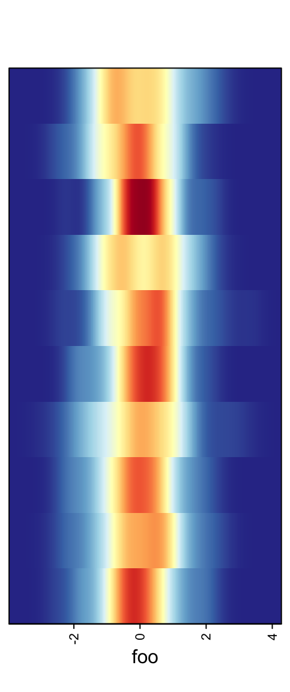
In ComplexHeatmap package, there is a densityHeatmap() function which visualizes distribution as a heatmap (not an annotation).
2.11 Joyplot annotation
anno_joyplot() is specifical for so-called joyplot (http://blog.revolutionanalytics.com/2017/07/joyplots.html).
m = matrix(rnorm(1000), nc = 10)
lt = apply(m, 2, function(x) data.frame(density(x)[c("x", "y")]))
ha = rowAnnotation(foo = anno_joyplot(lt, width = unit(4, "cm"),
gp = gpar(fill = 1:10), transparency = 0.75))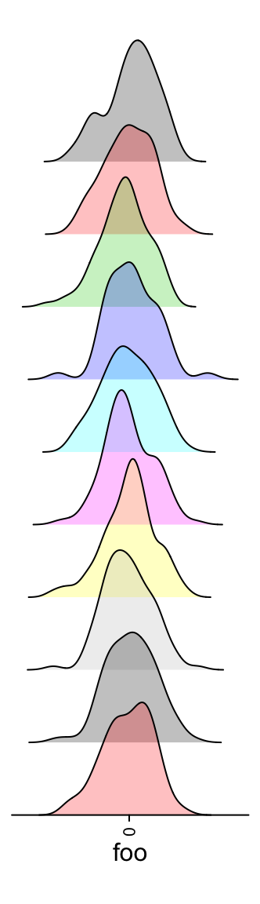
Or only show the lines.
m = matrix(rnorm(5000), nc = 50)
lt = apply(m, 2, function(x) data.frame(density(x)[c("x", "y")]))
ha = rowAnnotation(foo = anno_joyplot(lt, width = unit(4, "cm"), gp = gpar(fill = NA), scale = 4))
2.12 Horizon chart annotation
Horizon chart as annotation can only be added as row annotation. The value for anno_horizon() should be a list or a matrix where matrix columns correspond to rows in the annotation.
The default style of horizon chart annotation is:
lt = lapply(1:20, function(x) cumprod(1 + runif(1000, -x/100, x/100)) - 1)
ha = rowAnnotation(foo = anno_horizon(lt))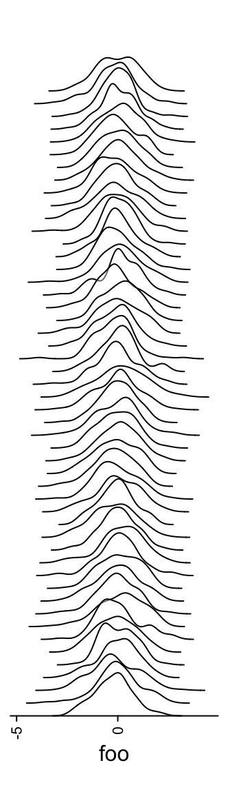
Colors for positive values and negative values are controlled by pos_fill and neg_fill in gar().
ha = rowAnnotation(foo = anno_horizon(lt,
gp = gpar(pos_fill = "orange", neg_fill = "darkgreen")))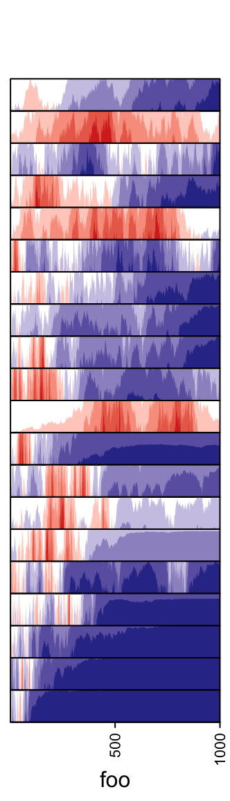
pos_fill and neg_fill can be assigned as a vector.
ha = rowAnnotation(foo = anno_horizon(lt,
gp = gpar(pos_fill = rep(c("orange", "red"), each = 10),
neg_fill = rep(c("darkgreen", "blue"), each = 10))))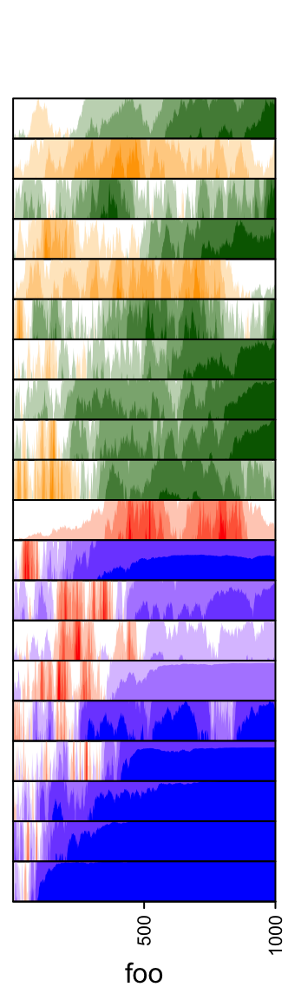
Whether the peaks for negative values start from the bottom or the top?
ha = rowAnnotation(foo = anno_horizon(lt, negative_from_top = TRUE))
The space between every two neighbouring charts.
ha = rowAnnotation(foo = anno_horizon(lt, gap = unit(1, "mm")))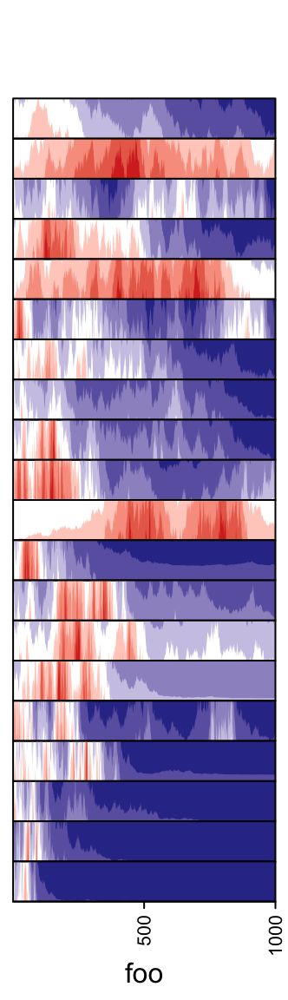
2.13 Text annotation
Text can be used as annotations by anno_text(). Graphic parameters are controlled by gp.
ha = rowAnnotation(foo = anno_text(month.name, gp = gpar(fontsize = 1:12+4)))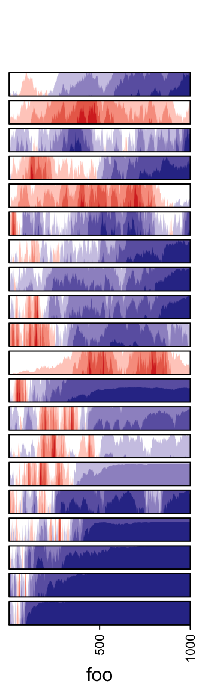
Locationsn are controlled by location and just. Rotation is controlled by rot.
ha = rowAnnotation(foo = anno_text(month.name, location = 1, rot = 45,
just = "right", gp = gpar(fontsize = 1:12+4)))2.14 Mark annotation
Sometimes there are many rows or columns in the heatmap and we want to mark some of them. anno_mark() is used to mark subset of rows or columns and connect labels with lines.
m = matrix(rnorm(1000), nrow = 100)
ha = rowAnnotation(foo = anno_mark(at = c(1:4, 20, 60, 97:100), labels = month.name[1:10]))
Heatmap(m, cluster_rows = FALSE, right_annotation = ha)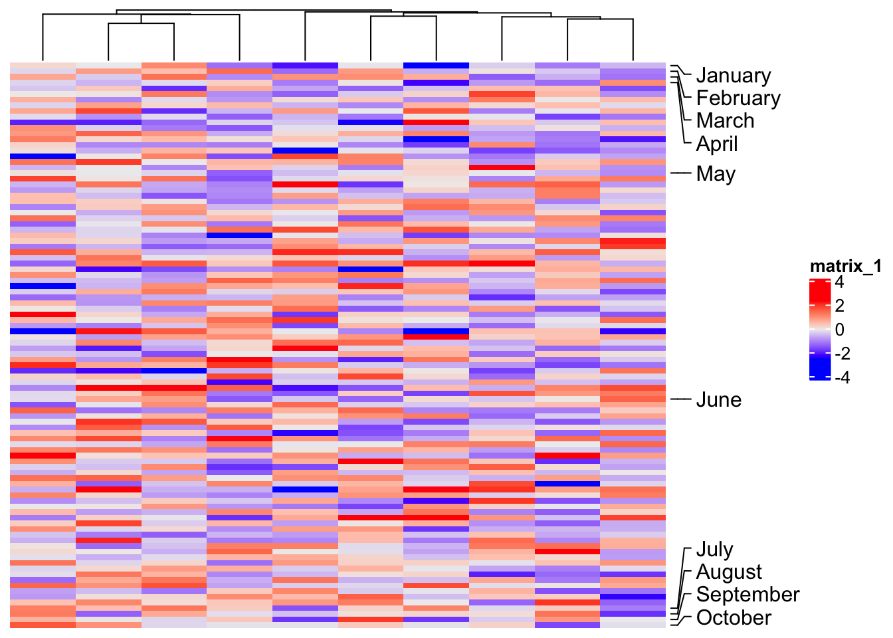
2.15 Multiple annotations
As mentioned before, to put multiple annotations in HeatmapAnnotation(), they just need to be specified as name-value pairs. In HeatmapAnnotation(), there are some arguments which controls multiple annotations. For these arguments, they are specified as a vector which has same length as number of the annotations, or a named vector with subset of the annotations.
The simple annotations which are specified as vectors, matrices and data frames will automatically have legends on the heatmap. show_legend controls whether draw the legend for them. Note here if show_legend is a vector, the length of show_legend should be the same as the simple annotations while not the number of all annotations.
gp controls graphic parameters (except fill) for the simple annotatios, such as the border of annotation grids.
border controls the border of every single annotations. show_annotation_name controls whether show annotation names. As mentioned, the value can be a single value, a vector or a named vector. annotation_name_gp, annotation_name_offset, annotation_name_side and annotation_name_rot controls the style and positions of the annotation names.
gap controls the space between every two neighbouring annotations. The value can be a single unit or a vector of units.
ha = HeatmapAnnotation(foo = 1:10,
bar = cbind(1:10, 10:1),
pt = anno_points(1:10),
gap = unit(2, "mm"))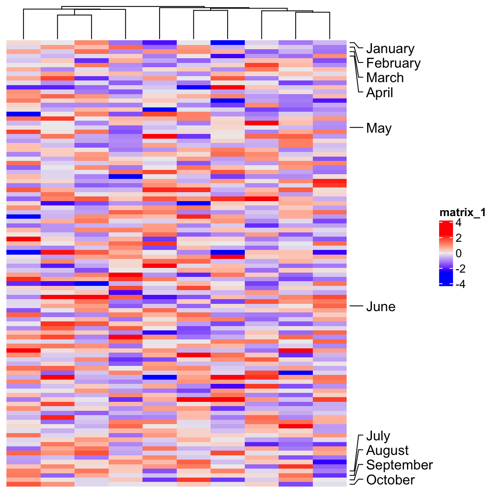
ha = HeatmapAnnotation(foo = 1:10,
bar = cbind(1:10, 10:1),
pt = anno_points(1:10),
gap = unit(c(2, 10), "mm"))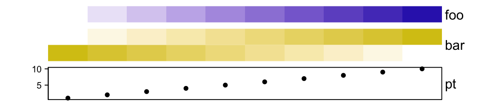
height, width, annotation_height and annotation_width control the height or width of the heatmap annotations. Normally you don’t need to set it because all the single annotations have fixed height/width and the final height/width for the whole heatmap annotation is the sum of them plus the sum of gaps. …
2.16 Summary annotation
2.17 Utility functions
2.18 Implement new annotation function
A normal R function defines how to draw the annotation graphics. As expected, the main part of the AnnotationFunction class is this function. The function defines how to draw at specific positions which correspond to rows or columns in the heatmap. The function should have three arguments: index, k and n (the names of the arguments can be arbitory) where k and n are optional. index corresponds to the indices of rows or columns of the heatmap. The value of index is not necessarily to be the whole row indices or column indices. It can also be a subset of the indices if the annotation is split into slices according to the split of the heatmap. The value in index is always sorted according to the reordering of heatmap rows or columns (e.g. by clustering). So, index actually contains a list of row or column indices for the current slice after row or column reordering. This type of design makes sure the annotation graphics are drawn at the correct positions and can be correctly corresponded to the heatmap rows or columns.
As mentioned, annotation can be split into slices. k corresponds to the current slice and n corresponds to the total number of slices. The information of k and n sometimes can be useful, for example, we want to add axis in the annotation, and if it is a column annotation and axis is drawn on the very right of the annotation area, the axis is only drawn when k == n.
Since the function only allows index, k and n, the function sometimes uses several external variables which can not be defined inside the function, e.g. the data points for the annotation. These variables should be imported into the AnnotationFunction class so that the function can correctly find these variables.
One important feature for AnnotationFunction class is it can be subsetable. To allow subsetting of the object, users need to define the rule for the imported variables if there is any. The rules are simple function which accpets the variable and indices, and returns the subset of the variable. The subset rule functions implemented in this package are subset_gp, subset_matrix_by_row and subset_vector. These three functions are enough for most of the cases.
In following, we defined three AnnotationFunction objects:
- It needs external variable and support subsetting
x = 1:10 anno1 = AnnotationFunction( fun = function(index) { n = length(index) pushViewport(viewport()) grid.points(1:n, x[index]) popViewport() }, var_imported = list(x = x), n = 10, subset_rule = list(x = subset_vector), subsetable = TRUE )
- The data variable is defined inside the function and no need to import other variables.
anno2 = AnnotationFunction( fun = function(index) { x = 1:10 n = length(index) pushViewport(viewport()) grid.points(1:n, x[index]) popViewport() }, n = 10, subsetable = TRUE )
- The most compact way to only specify the function to the constructor.
anno3 = AnnotationFunction( fun = function(index) { x = 1:10 n = length(index) pushViewport(viewport()) grid.points(1:n, x[index]) popViewport() } )
Finally, you need to push a viewport for graphics and finally pop the viewport.